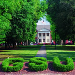
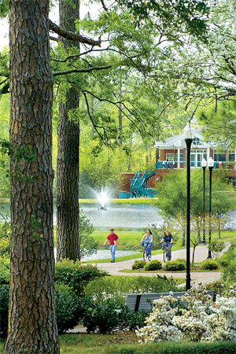
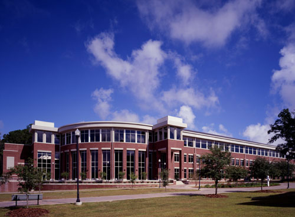
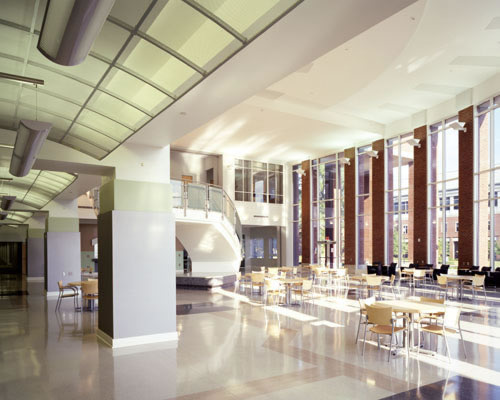

|  |
The AMS Regional ConferenceGeorgia Southern University, March 12-13, 2011 |
 |
AMS Associate Secretary: Dr. Matthew Miller
GSU Coordinator: Dr. Sze-Man Ngai
Local Organizer
Committee:
Martha Abell,
Alina
Iacob, Frédéric Mynard, Sze-Man Ngai, Xiangdong Xie, Shijun Zheng
| Schedule | Abstract Submission |
Travel and Shuttle Service |
| Special Sessions | Directions | Wireless Internet |
| Statesboro Map |
Registration | Local Hotel Information |
| |
||
|  |  |
| The conference will
take place in the Information
Technology and COBA (College of Business Administration) buildings |
|
Contact
Sze-Man Ngai:
smngai@GeorgiaSouthern.edu
The Special Sessions can be found here
or the AMS
page
last update: 02/23/2011